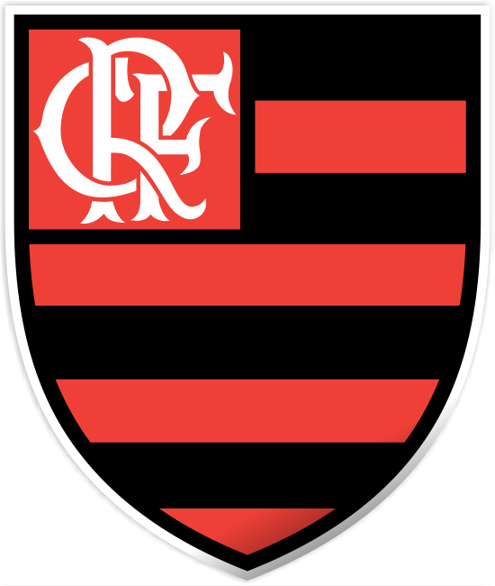
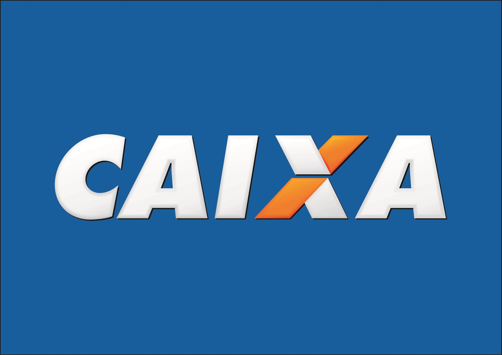
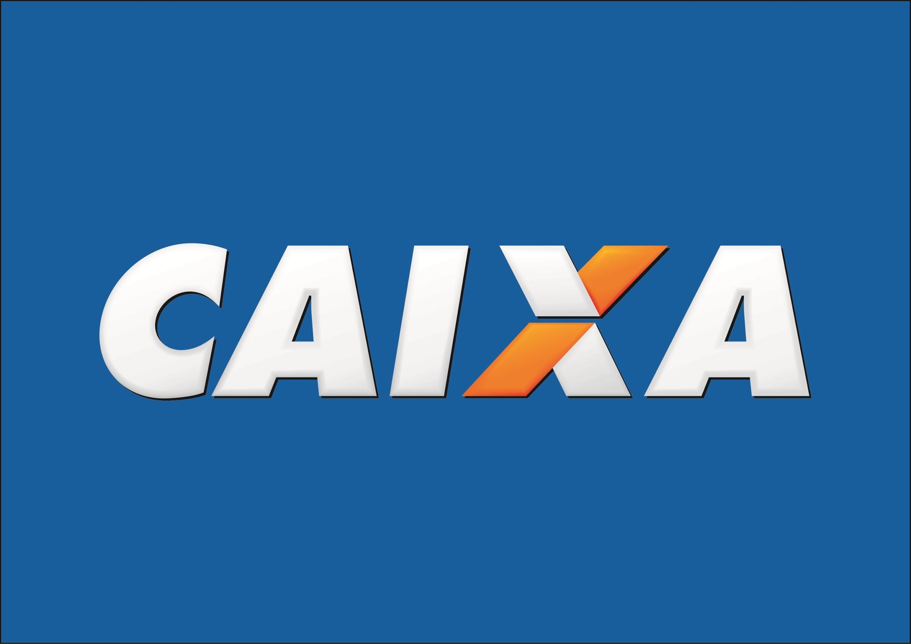
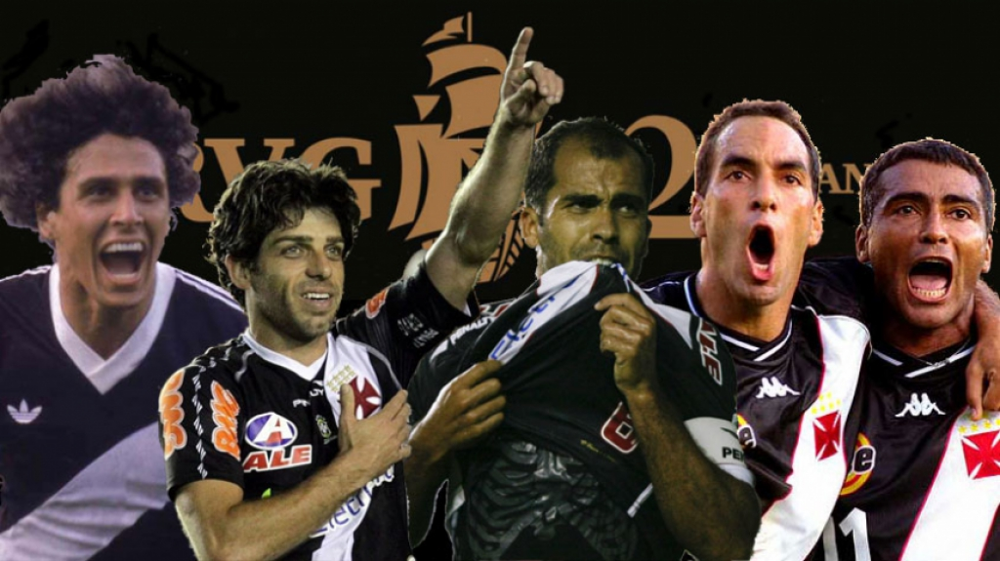
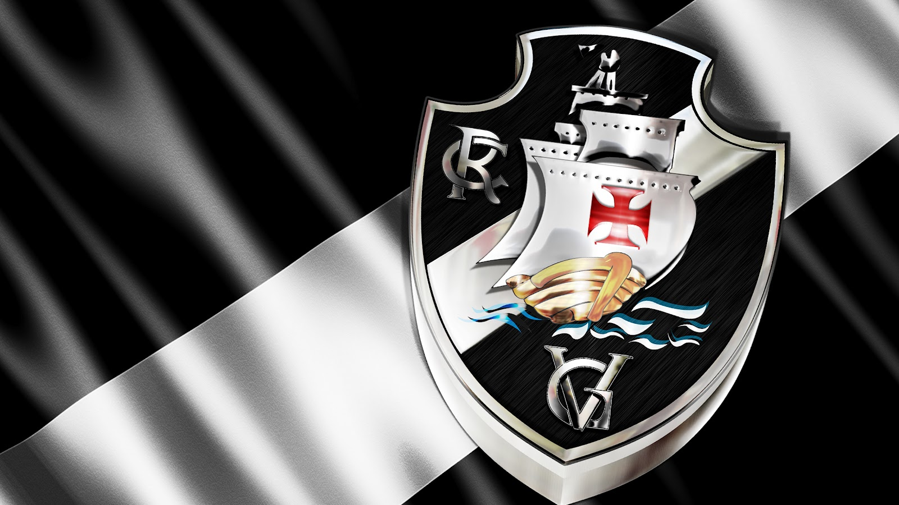
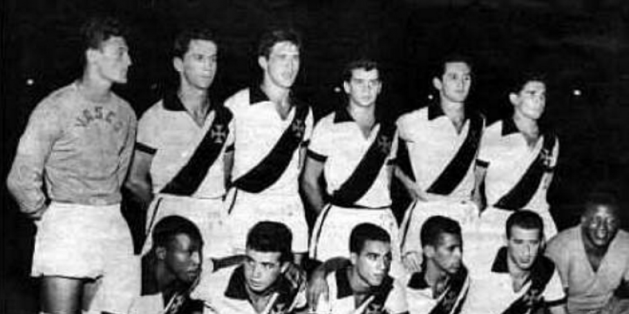
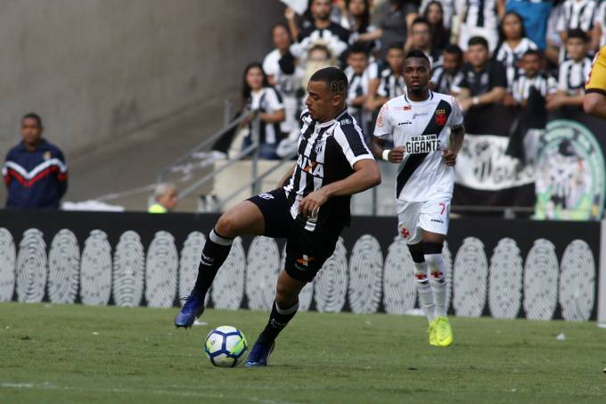

Flamengo
Podemos ver a seguir o escudo e um dos patrocinadores do clube:

Sobre o Fla:
O Clube de Regatas do Flamengo (mais conhecido simplesmente como Flamengo, e popularmente pelos apelidos de
Mengo, Mengão e Fla) é uma agremiação poliesportiva brasileira com sede na cidade do Rio de Janeiro. Fundado no
bairro de mesmo nome para disputas de remo em 17 de novembro de 1895, tornou-se um dos clubes mais
bem-sucedidos e populares do esporte brasileiro, especialmente pelo futebol. Tem como suas cores tradicionais o
vermelho e o preto e como seus maiores rivais esportivos o Botafogo, o Fluminense e o Vasco da Gama.
Fluminense
Últimos três treinadores:
- Fernando Diniz
- Fábio Moreno
- Marcelo Oliveira
Tres títulos importantes:
- Copa do Brasil
- Torneio Internacional de Verão
- Taça Guanabara
Podemos ver a seguir o escudo e um dos patrocinadores do clube:
 

Sobre o Flu:
Fluminense Football Club é uma agremiação poliesportiva e cultural sediada no bairro de Laranjeiras, Zona Sul
da cidade do Rio de Janeiro, no Brasil, fundada em 21 de julho de 1902. É uma sociedade civil de caráter
desportivo que tem como principal atividade o futebol.
Vasco
 |
 |  |
|---|---|---|
|  |  |
Podemos ver a seguir o escudo e um dos patrocinadores do clube:
Sobre o Vasco:
Club de Regatas Vasco da Gama MHM é uma entidade sócio-poliesportiva brasileira com sede na cidade do Rio de
Janeiro, fundada em 21 de agosto de 1898 por um grupo de remadores. Inspirados nas celebrações do quarto
centenário da descoberta do caminho marítimo para as Índias, ocorrida em 1498, batizaram a nova agremiação com o
nome do herói português que alcançou tal feito, o navegador Vasco da Gama.